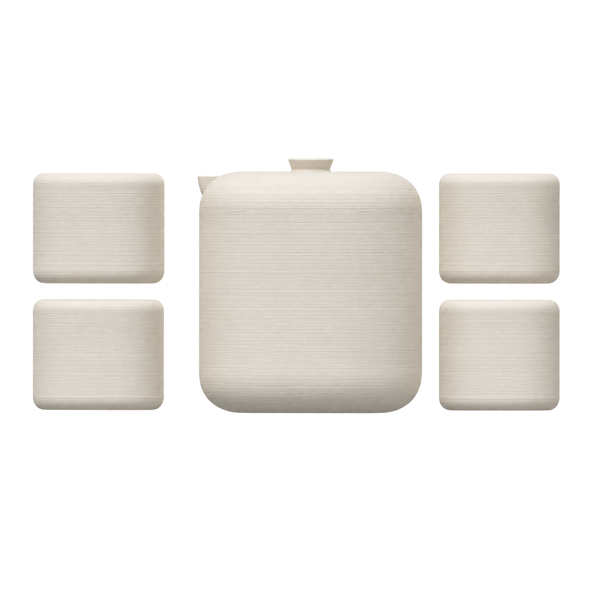

茶壶与茶杯，一场安静的茶事对话。 Teapot and teacups — a quiet tea ritual, shared.

正窑经典壶杯套件，选用定窑白瓷泥为胎。定窑，宋代五大名窑之一，窑址在今河北曲阳涧磁村，以烧制白瓷独步天下。其白非凡俗冷白，也不是漂白过的刺白——而是一种有温度的白，白中微微泛暖黄，像象牙、像温玉、像冬日第一缕光照在宣纸上。识者称之为「象牙白」，这也是世界上最好看、最耐看的白。
The Zhengyao Classic Hu-Bei Set is crafted from Dingyao white porcelain clay. Dingyao — one of the Five Great Kilns of the Song Dynasty, firing in present-day Quyang, Hebei — was unrivaled in white porcelain. Its white is not cold industrial white, nor the harsh white of bleach. It is a white with temperature — faintly warm, faintly yellow, like ivory, like jade warmed in the palm, like the first winter sunlight falling on xuan paper. Connoisseurs call it "ivory white" — quite possibly the most beautiful white in the world.
为什么是这种白？世界上那么多颜色，最能让人安静下来的，往往是自然的原色——亚麻色、原木色、植鞣皮革随岁月变深的蜜色、原棉的灰白……它们有一个共同点：不喧哗，不抢夺，只是安静地做自己。定窑白瓷，正是这样一类颜色。它不抢茶色，不压茶香，茶汤注进去，本色清晰可见——你喝到的，是茶原本的颜色。
Why this white? Of all the colors in the world, the ones that quiet the mind are usually nature's originals — linen, raw wood, the honey-brown that vegetable-tanned leather deepens into, the grey-white of unbleached cotton. They share one quality: they do not shout. They do not compete. They are simply themselves, quietly. Dingyao white porcelain belongs to this family. It does not compete with the tea's color, does not mask its fragrance. When you pour, the true color of your tea comes through clearly — you are drinking tea as it actually looks.
施以透明釉，在 1280°C 窑火中，釉面自然流淌，凝结出定窑标志性的「泪痕」纹理。每一件上的泪痕走向都不同，天然唯一，无法复制。定窑白瓷的釉面致密，气孔极少，茶渍不易渗入，长期使用依然光洁如初——好的器物，经得起时间的凝视。
Glazed transparent and fired at 1280°C, the glaze flows naturally across the surface, leaving Dingyao's signature "tear-mark" drips. No two pieces have the same pattern — each one, naturally one of a kind. The glaze of Dingyao porcelain is exceptionally dense, with minimal surface porosity — tea stains do not penetrate, and the surface stays clean and luminous even after long use. A good vessel deserves the gaze of time.
茶壶采用 3D 打印中空夹层结构，注沸水后外壁不烫手，直接手持即可使用——省略了传统把手，器型更简洁。方圆形轮廓，介于方与圆之间，既有方的稳重，又有圆的柔和。
The teapot features a 3D-printed hollow double-wall structure — the exterior stays cool even with boiling water inside, so you hold the body directly. No handle needed, for a cleaner silhouette. The squircle profile — poised between square and round — carries both the stability of a square and the softness of a circle.
壶嘴尖端设有一道精心计算的止水筋——一条微凸的棱线。出汤时，它引导水流聚拢成一道稳定利落的弧线；收手时，棱线即刻切断水流。配合壶盖顶部的气孔，倒茶时空气从气孔补入壶内，内外气压平衡，水流不窜、不溅。残余的茶汤被表面张力稳稳锁在壶嘴内侧——不会沿壶身回流，不会滴落在茶席上。干净，利落。这是一只茶壶对一个动作的回答。
The spout tip carries a precisely calculated anti-drip ridge — a subtle raised line. During pouring, it gathers the stream into a steady, clean arc. The moment you stop, the ridge cuts the flow instantly. Paired with the air hole atop the lid, which equalizes internal pressure as tea exits, the stream stays composed — no sputtering, no splashing. Residual tea is held inside the spout by surface tension — it does not creep down the body, it does not drip onto the tea cloth. Clean. Decisive. This is a teapot's answer to a single gesture.
而最令我们骄傲的，是圆角。所有转角均采用 G2 曲率连续曲线——这意味着，曲线在转角处不仅相切（G1），而且曲率变化是连续的（G2），没有任何突然的折点。视觉上，它看起来「无比顺滑」；手感上，指腹滑过转角，感受不到任何生硬的突变。这种曲线，在汽车设计里意味着百万级车身的流线，在字体设计里意味着 Helvetica 的温润，在 Apple 的产品里意味着你拿在手里那块铝合金为什么摸起来「刚刚好」——那不是巧合，那是 G2。定窑白瓷的釉面，把这道曲线的手感，放大到了极致。
But what we are proudest of is the curves. Every corner is refined with G2 curvature continuity — meaning the curves are not only tangent (G1), but the rate of curvature itself changes smoothly (G2), with no sudden kink. Visually, it looks impossibly fluid. To the touch, your fingertips glide across the corner and feel no harsh transition. This is the same curve that shapes million-dollar car bodies, that gives Helvetica its warmth, that makes an iPhone's edge feel "just right" in your hand. That is not coincidence. That is G2. The glaze of Dingyao porcelain amplifies the tactile perfection of this curve to its limit.
这一切的前提，是 3D 打印。中空夹壁隔热，传统拉坯做不到；G2 曲率控制，手工修坯精度不够；壶身与壶盖的间隙，需要在数字模型中就精确到 0.2mm。3D 打印不是在代替匠人——是让设计不再受限于成型工艺的瓶颈。我们先用代码写出理想形态，再让打印机一笔一划地把它变成实物。自由，是 3D 陶瓷打印带给这场茶事的第一份礼物。
All of this begins with 3D printing. A hollow double wall for insulation — the wheel cannot do this. G2 curvature control — hand trimming lacks the precision. The gap between body and lid — it must be dialed to 0.2mm inside the digital model, before a single gram of clay is laid down. 3D printing does not replace the artisan — it frees the design from the bottleneck of forming technique. We write the ideal form in code first, then let the printer lay it down stroke by stroke. Freedom — that is the first gift 3D ceramic printing brings to the tea ritual.
拖拽旋转 · 滚轮缩放 · 双指捏合Drag to rotate · Scroll to zoom · Pinch to scale
中空隔热壶身 —— 3D 打印独有夹层结构，注沸水后壶身外壁不烫手，无需把手，可直接手持Hollow-insulated body — 3D-printed dual-wall structure keeps the exterior cool to the touch even with boiling water inside. Handle-free, held directly in hand.
经典方圆形设计 —— 介于方与圆之间，既有方的稳重，又有圆的柔和Classic squircle design — poised between square and round: the stability of a square, the softness of a circle.
G2 连续圆角曲线 —— 所有转角采用 G2 曲率连续变化，视觉流畅无突变，手感温润G2 continuous curves — every corner transitions through G2 curvature continuity, visually seamless, pleasing to the touch.
壶嘴流线型设计 —— 出水流畅，断水利落，不滴不漏Streamlined spout — smooth pour, clean cutoff, no dripping.
壶盖精密吻合 —— 倒茶时壶盖不移位，定窑白瓷釉面一体烧制Precision lid fit — stays in place when pouring; Dingyao white porcelain glaze, single-fire form.
拖拽旋转 · 滚轮缩放 · 双指捏合Drag to rotate · Scroll to zoom · Pinch to scale
直口杯沿，唇感舒适，品饮时茶汤流畅入口Straight rim — comfortable on the lips, smooth sipping experience
杯壁厚度适中，隔热不烫手Balanced wall thickness — heat-insulating, comfortable to hold
定窑白瓷釉面，茶汤本色清晰可见Dingyao white glaze — true tea color clearly visible
底部加宽，放置稳妥不易翻倒Wider base — stable placement, tip-resistant
⚠️ 容量与尺寸为参考值，请以实物为准。每件器物手工上釉，釉色与纹理存在轻微差异，属正常现象。 ⚠️ Capacity and dimensions are reference values. Please refer to the actual product. Hand-glazed — slight variations in glaze color and texture are natural.
居家茶席 · 办公室 · 送礼 · 茶道练习
Home tea ritual · Office · Gifting · Tea practice